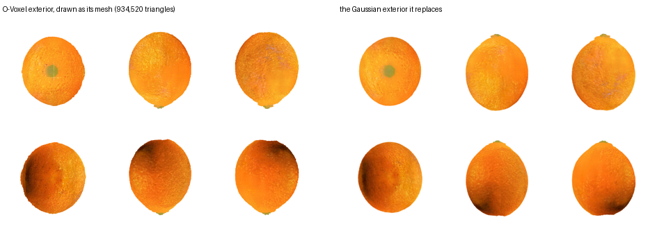

Cube Interior + O‑Voxel Cut Surface
The hidden volume stops being a rendering primitive
Preprint
Abstract
An object that can be cut open is asked two different questions, and a Gaussian is made to answer both. Where is the material — occupancy, connectivity, which piece a point belongs to, what collides with what — and what does a surface look like, both the peel and the face a cut has just exposed. A rendering primitive is good at the second and pays for the first with a trade it cannot escape: with \(\rho = \sigma/h\) the support scale over the sample spacing, small \(\rho\) leaves holes in the volume and large \(\rho\) blends across the material boundaries the interior is made of. We give the two jobs two representations. A coarse cube grid holds the hidden volume, where a cell's support is exactly its own cell and therefore tiles; a dual-grid surface holds everything visible, the original exterior and every newly exposed cut face alike. Cutting is then discrete on the lattice and analytic on the boundary: connected components label the pieces and the visible face is an exact planar polygon per cell, matching closed-form cut areas to 1.0% and 1.3%. The surface pays for curvature rather than resolution — collapsing the dual grid by its own quadric leaves 48.7% of the nodes at a third of a cell of error — and the physics keeps what the lattice gave it, with collision a floor division and an occupancy test and no point-in-polyhedron query anywhere. End to end on held-out cuts, generating the topology and supplying six views beats quantising the scan on every object that can be scored — 66.5 of FID against 86.4 on the orange — and the same cuts drawn entirely from the two representations, with no Gaussian anywhere in the picture, reach 167.5 against the Gaussian baseline's 187.4 on the watermelon. Every number here was measured on the three objects of the previous project, or on a synthetic shape whose answer is known in closed form.
Three planes, eight pieces, drawn apart
and back — each object as a cube volume, drawn as the faces of its own cells. No dual
grid and no Gaussian anywhere in the picture: multicut_gif.py takes the six cube-face
offsets and nothing else from the surface code, so what is on screen is the blocky boundary the
lattice actually has. The pieces come out of connected-component labelling on the lattice; the
colour on every exposed face is read from the volume that was already there, and no face is
tinted.
Introduction
A reconstruction of a real object knows only its outside. Photographs see a surface, so a model fitted to photographs has a surface and nothing behind it, and the moment such an object is cut open the cut reveals an empty shell. That is a problem for any application in which objects are handled rather than merely viewed — surgery rehearsal, food and material simulation, games in which things break — and it is the problem FruitNinja addresses by generating an interior that is plausible rather than measured, supervising it with depth-conditioned diffusion on cross-sections.
FruitNinja generates an object's interior so that cutting it open reveals something plausible, and represents that interior as a cloud of small opaque Gaussians. The previous project in this series kept that supervision and changed the representation, putting the whole object — interior and skin alike — on a two-level voxel lattice with one Gaussian per occupied cell. Quantising is what turns a set of points into a graph, and three properties followed from it: a cut could be answered by exact connected-component labelling rather than by clustering, material separated into peel, flesh and pith without supervision, and the appearance stopped depending on the resolution it was rendered at. This project asks the question that lattice leaves open. If every interior cell already has an address, a neighbourhood and a feature, what is the Gaussian in it still for?
They are doing two jobs. As volume they answer whether space is occupied, which cells are connected, which piece a point is in, and what a colliding body has hit. As image they are splatted, blended and composited. The trade this work implements states the conflict directly: a Gaussian's support has one scale \(\sigma\) and the lattice has one spacing \(h\), and
Neither is a bug to be tuned away; they are the same parameter pulling in two directions. The resolution is to stop asking one primitive for both. A cube's support is its cell, so a solid occupancy renders solid at any resolution with nothing to tune, and a dual-grid surface has an explicit polygonal boundary, so coverage comes from triangles rather than from ellipsoids overlapping enough to hide the gaps between them.
Three things follow from splitting them, and they are what this paper reports. The volume becomes solid. A cube's support is its cell, so the occupancy has to be right rather than the primitives fat. Two of the three objects were never fragmented at all once the occupancy is indexed correctly; the quantised orange labels as 561 disconnected pieces and the fill closes it to one. The cut becomes exact where it shows. Topology stays discrete on the lattice, where discreteness is cheap, and the visible face becomes an analytic polygon per cell, matching closed-form cut areas to 1.0% and 1.3%. The surface pays for curvature rather than resolution. A dual grid costs \(O(A/h^2)\); collapsing it by its own quadric leaves 48.7% of the nodes at a third of a cell of error, with the uniform grid recovered exactly at the identity setting, and 95.2% of it still standing at zero tolerance.
The design this implements deliberately defers six things and admits five limitations. Four of the six are done here and measured, and three of the five close; what remains is stated in the conclusion rather than left for a reader to notice.
Related Work
Interior generation. FruitNinja [1] supervises an object's interior with depth-conditioned diffusion on cross-sections and stores it as opaque atomic Gaussians. We keep that supervision unchanged — the contribution here is not a new way to invent an interior — and change what holds it.
Surface representations for generated 3D. TRELLIS.2's O-Voxel [2] is a field-free sparse voxel surface: a Flexible Dual Grid in which every active voxel carries a dual vertex and grid-edge intersection flags, handling open, non-manifold and fully enclosed internal surfaces. We use its official encoder without reimplementing it, for the cut face and then for the whole exterior.
Dual contouring. The dual vertex is a quadric's minimiser [3], and quadrics are additive over their planes. That is what lets an adaptive grid be built by collapsing, and the collapse's error be read off the same quadric that placed the vertex.
Physics on primitives. PhysGaussian [4] simulates Gaussians with MPM. We keep the existing particle set and give it piece identity, so subdividing a cut band multiplies leaves and not particles.
Method
What a dual grid is
The rest of this section assumes one structure, so it is worth drawing before it is used. A dual grid is the surface counterpart of an occupancy grid. The occupancy answers inside-or-outside per cell, and its boundary is a staircase at the cell size — that is what makes it a good volume and a poor surface. A dual grid keeps the same cells and puts one vertex inside each boundary cell, connected to the vertices of the cells it shares a face with. The connectivity is therefore fixed by the occupancy and needs no marching table; only the positions are free, and that is where the surface comes back.
Where each vertex goes is decided by a quadric. Every surface plane passing through the cell contributes a term \(( \mathbf{n} \cdot \mathbf{x} - \mathbf{n} \cdot \mathbf{p} )^2\), the terms add, and the vertex is placed at the minimum of the sum. Two consequences matter here. On a flat patch every cell's quadric has the same minimum, so those vertices coincide and can be merged — a flat region costs almost nothing, which is what “paying for curvature instead of resolution” means. And a cell the quadric cannot pin down, because it has seen too little surface, can be detected and left alone rather than guessed at.
O‑Voxel is TRELLIS.2's implementation of this — a Flexible Dual Grid, in which every active voxel carries its dual vertex and flags for which of its edges the surface crosses. “Field-free” means it stores those crossings rather than a signed-distance field to reconstruct them from. Where this page says dual grid and O‑Voxel it means the same object.
The pipeline, in order
Everything below is one path, and every object takes it. What differs between two objects is a
parameter file, never a branch in the code. To be exact about which part is a script: steps 1 to 3
are method/run.sh, driven entirely by objects/<name>.conf, and
steps 4 to 7 are run against the lattice it produces by the tools each box names. an object arrives, a two-level lattice is built from
it, the interior is trained against cross-sections, the boundary is converted, and from then on
cutting, drawing and simulating are the same three operations on the same two structures. The
steps are numbered here so that the sections that follow can be read as the justification for one
of them rather than as a list of techniques.
- The lattice. Cells at a coarse spacing \(h_c\) fill the volume and cells within a skin band of the boundary are subdivided to \(h_f = h_c/2\). The occupancy must be a solid, because a cube's support is exactly its own cell and a gap is therefore a hole rather than a coverage parameter. Two routes reach this and they are the subject of the next two sections.
- The skin. The outermost cells take the object's appearance — carried already if the lattice was quantised from a reconstruction, projected from six rendered views if the topology was generated.
- The interior. Trained against cross-section photographs and diffusion targets, with the skin pinned to what step 2 wrote. The exterior therefore owes nothing to this training, which is what makes the appearance claim testable at all.
- The boundary. The occupancy boundary at any level is converted to an O‑Voxel dual grid, each node placed by its own quadric. This is the whole visible surface, not a patch: the original peel and every face a cut will expose are one representation.
- The cut. Refine the band the plane crosses, drop the adjacencies the plane separates, label connected components. Piece identity is discrete; the visible face is an exact planar polygon per cell.
- Drawing and simulating. The dual grid answers what is visible; the cube hierarchy answers where material is. Neither borrows the other's job.
- The loop. A dual grid is a closed surface, so it is a valid occupancy input: the object that was cut can be voxelised again and cut again, with no path back through a reconstruction.
Steps 1 and 2 are where the two routes differ and nothing after step 3 can tell which was taken. That is the point of drawing it this way: the representation is downstream of how the object arrived.
The occupancy has to be a solid first
The lattice is not solid and never was. The paper's fill places one particle per empty cell and skips cells that already hold a primitive, so the volume is a sponge; Gaussians hid it because their support overlaps and a cube's does not. Closing the pinholes and filling what the closed shell encloses is idempotent — running it twice changes nothing — and the number that says how much it mattered is the connected-component count of the uncut object.
| object | coarse cells | pieces before | pieces after |
|---|---|---|---|
| doughnut | 517,166 → 522,753 (+1.1%) | 1 | 1 |
| orange | 759,353 → 848,021 (+11.7%) | 561 | 1 |
| watermelon | 553,043 → 561,805 (+1.6%) | 1 | 1 |
A sponge falls into many connected components and a solid into one, so the component count of the uncut object is a direct read-out of whether the occupancy is solid — and it says these are holes, not fragments. A piece count means nothing until this has run, so the cutting code runs it rather than assuming it.
Two routes to an exterior
An object arrives one of two ways, and the representation has to be reachable from both. If it was scanned there is a reconstruction, and the structure and the appearance are both in it: the baseline quantises that model directly and is done. If it was not scanned — the doughnut, for which no reconstruction was ever released — there is nothing to take, so the topology has to be generated and the appearance supplied as six views. Both routes end at the same thing: a two-level lattice whose interior is solid and whose skin carries the object's colour.
The second route is worth stating in full because each of its steps replaces an inference with something exact.
| step | what it does | what it replaces |
|---|---|---|
| topology | cells inside a signed-distance field, at two spacings | quantising a reconstruction, then repairing the holes it left |
| normals | the gradient of that same field | the direction from the centroid, or a smoothed occupancy gradient |
| six views | renders of the source model, cropped to the silhouette | images generated by diffusion, one per face |
| skinning | projection through the camera that made each view, blended by incidence | a saturating map from a cell's direction to a reference radius |
Solid by construction is the first payoff. A cell is inside when the field says so, so there is no scan to recover, no radius to infer and no closing to repair: closing the generated occupancy adds 0.1% of its cells against 11.7% for the quantised orange, and the uncut object is one piece rather than 561.
The normal is the second, and the size of it is easy to underrate. On the flat face of a torus,
where the true normal is −1, the direction from the centroid gives −0.284 and a
smoothed occupancy gradient −0.492 at the default smoothing. Reading it off the field gives
−1, and the doughnut's top is then written by the up view 90% of the time
against 32%, its bottom by down 90% against 0%. That is the difference between icing
on the top and icing smeared down the sides.


Cutting: discrete topology, analytic boundary
A cut arrives as a plane. Cells it crosses are subdivided until \(h_\ell \le h_{\text{target}}\), leaves are joined to their face neighbours, edges the plane separates are dropped, and connected components are the pieces. The crossing test is one absolute value rather than eight corners, because a cube's extreme values on a plane sit at two opposite corners and which two depends only on the signs of \(\mathbf{n}\):
Adjacency is arithmetic too. A leaf's neighbour is at its own level or coarser — were it finer, the finer leaves on the shared face would find this one — so the coarser candidate is the neighbour's coordinate shifted right, which is floor division and therefore the cell containing it. With \(Q\) planes a leaf carries a side code, the \(Q\) signs at its centre, and adjacency survives only between equal codes.
Topology is voxel-approximate by construction; the visible face must not be, or it reads as a staircase. Per cut leaf we intersect the plane with the twelve edges, order the points around their centroid in the plane's own basis, and fan them: a convex polygon of three to six vertices lying exactly on the plane, worst deviation 0.00e+00 over a whole object. Every crossed cell is refined to the same depth, so cut polygons meet edge to edge and there are no T-junctions between them.
The surface, all of it, as O-Voxel
Converting only the cut face and leaving the photographed outside as Gaussians is what makes two renderers, a depth convention and a compositing step necessary. Converting the exterior as well removes the seam instead of managing it. The occupancy already holds the volume, so the exterior is its boundary — every face of an occupied cell whose neighbour is empty — and the same dual-grid encoder that handles the cut face takes the staircase off it.

Paying for curvature instead of resolution
A dual grid stores one node per active surface voxel, so it costs \(O(A/h^2)\): a plane costs as much as a crumpled sheet of the same extent. That is fixable inside the algorithm, because the dual vertex is already the minimiser of a quadric. For supporting planes \(\{(\mathbf{n}_i, d_i)\}\),
so a quadric is ten numbers and — the property everything rests on — it is additive over the set of planes, \(Q_{\text{parent}} = \sum Q_{\text{child}}\), exactly and with no reference to the mesh the children came from. The grid therefore collapses bottom-up: merge a \(2\times2\times2\) block, add the quadrics, solve \(A\mathbf{x} = \mathbf{b}\), and read the residual \(r = c - \mathbf{b}^\top\mathbf{x}\), the sum of squared distances from that one vertex to every plane the block covers. The tolerance is a length rather than a residual,
because a raw residual grows with how many planes fall in a block and would coarsen a dense region and refuse a sparse one for no geometric reason. Two conditions make it correct rather than merely plausible. A parent is active when any child is, which is the rule for a surface and not a volume: a 2-manifold crossing a block activates four to six of its eight cells and never all eight. And a node may only claim an area it has seen — a patch of side \(2^L h\) contains on the order of \((2^L)^2\) fine cells, so the plane count has to keep up with the area, or a block holding two triangles merges to the top and represents a cell 256 wide on the evidence of a single plane.
Why the exterior was converted too
Before it was, there were two renderers and a per-pixel choice between them, \(C(u) = C_G(u)\) if \(D_G(u) < D_O(u)\) and \(C_O(u)\) otherwise. The cut surface is planar by construction, so its rasterisation is a ray-plane intersection in closed form and a pixel is covered exactly when the hit lies in a cut leaf. The depth convention had to be measured and the obvious measurement cannot decide it: the Gaussian renderer returns an alpha-weighted depth along the ray rather than the nearest surface, so both candidates sit 0.08 to 0.10 behind a minimum over primitive centres. What separates them is where the error lives — Euclidean distance and view-space \(z\) differ by \(1/\cos\) of the angle off the axis — and by radial slope it is view \(z\), −0.058 against +0.060.

The exterior here is the boundary of the occupancy at whatever level, not the refined cells.
Taking it as cell_level ≠ 0 looks right and is not: the orange's refined cells run
from \(r/R\) — distance from the centroid over the maximum such distance — 0.808 to 1.000 while its coarse cells reach 0.936, so much of the outer surface is
coarse cells the level test discards, and 77% of what remains sits in the bottom 40% of the object.
Even correct, a Gaussian shell is not opaque — it covers 20% to 24% of the frame — so
at the silhouette the cut face shows through from the side it should be hidden on. That, and not
the depth test, is what converting the exterior removes.
Physics keeps what the lattice had
The O-Voxel patch is the visible boundary and takes no part in the physics; the cube hierarchy is the physical volume and answers every question about where material is. Piece identity is a relabelling and not a resampling — the existing particle set stays as it is and each particle takes the piece of the leaf it falls in, so subdividing a cut band multiplies leaves and not particles. Collision is a floor division and an occupancy test, with one more of each when the coarse cell was refined.
Near the cut the voxel test claims material up to half a leaf past where the cut is, because a leaf the plane passes through is occupied as a whole. One comparison fixes it: the point must be on the piece's own side of \(\Pi\). Measured on the current models, two freshly separated halves report material inside each other from occupancy alone; with the plane test, none of them do.
| object | particles | solid cells | at rest, occupancy alone | with the plane test | pushed 1 / 2 / 4 cells in |
|---|---|---|---|---|---|
| orange | 1,231,312 | 894,304 | 2,698 of 610,723 | 0 | 8,888 / 20,386 / 43,648 |
| watermelon | 1,065,856 | 748,248 | 2,699 of 527,791 | 0 | 8,978 / 20,373 / 43,781 |
| doughnut | 942,840 | 567,448 | 943 of 473,192 | 0 | 2,722 / 6,542 / 13,994 |
The last column is the check that the test is a contact test and not a coincidence: pushing one piece into the other by one, two and four coarse cells has to report more penetration each time, and it does, on every object. An earlier version reported the opposite — false positives that grew with separation rather than with overlap — because the spatial key is a polynomial in the coordinates and a point far outside the table's range aliases onto a valid key.
A rigid transform per piece is correct only while nothing bends. Each surface vertex is bound to its own piece's \(k\) nearest particles with weights fixed at bind time,
which follows any affine motion exactly — 8.9e-16, machine precision, for a rotation with a translation and for a stretch with a shear — provided the vertex is written in terms of the particles' positions rather than their displacements plus a stored offset. So the binding keeps no offset and instead moves the vertex to its particles' weighted centre at bind time, reporting the residual rather than hiding it.
Results
Cutting
| object | band leaves | total leaves | pieces, one cut | pieces, three cuts |
|---|---|---|---|---|
| doughnut | 21,760 (3.9%) | 552,276 | 2 | 8 (18 raw, slivers rejoined) |
| orange | 86,776 (9.4%) | 926,751 | 2 | 8 |
| watermelon | 66,408 (10.7%) | 618,382 | 2 | — |
The band is \(O(N^{2/3})\) of the volume. On synthetic shapes the piece counts are the known ones — a ball is 2, 4 and 8 under one, two and three planes, a torus cut by two planes through its axis is 4, a dumbbell cut through each ball is 3 — and the case that justifies subdividing at all is a cap thinner than a coarse cell: every coarse centre stays on one side, so the coarse labelling reports the object uncut, and refined it reports two pieces.
Where several planes meet they carve genuine slivers whose size scales with the cell, and refinement does not remove them: the doughnut's three cuts leave 18 pieces, eight of them under a hundred cells, and refining to a quarter of the spacing — five times the leaves — still leaves six. At one cell a sliver is \(10^{-7}\) of the object, so reporting them as pieces is what is wrong. A piece below a stated threshold rejoins the neighbour it shares the most faces with: 18 become 10 at 64 cells and 8 at 512, with the smallest kept at 2,287.
The cut face
| shape | cut area, mesh | closed form | error |
|---|---|---|---|
| ball through its centre | 448.0 | \(\pi r^2\) = 452.4 | 1.0% |
| torus across its axis | 868.0 | \(4\pi R r\) = 879.6 | 1.3% |
That 1% is the voxelisation of the silhouette, not the polygons — every vertex lies on the plane to 0.00e+00.
Cross-sections, on all three objects

| object | cells after filling | holes, before | holes, after |
|---|---|---|---|
| orange | 877,494 → 1,059,348 | 14.9% / 8.7% / 6.6% | 0.28% / 0.02% / 0.00% |
| watermelon | 1,741,169 → 2,534,444 | 9.2% / 9.5% / 11.4% | 0.08% / 0.05% / 0.10% |
| doughnut | 797,838 → 809,318 | 10.6% / 10.7% / 11.4% | 9.5% / 8.7% / 10.2% |
The fraction of each section's own area the renderer leaves unpainted, before and after the occupancy is made solid. A cube's support is exactly its cell, so a gap is a hole in the occupancy and not a coverage parameter, which is why the first column exists at all — those holes were always there and Gaussians were covering them with their skirts.
The doughnut does not solidify, and that is worth stating rather than tuning. Closing at radius one adds 1.1% of its coarse cells and leaves 8.7% to 10.2%; radius three costs 38% more fine cells and reaches 5.3% to 7.6%. Its gaps are not the torus's own hole — the largest connected gap is 30% of the gap area and sits off-centre — and its lattice is the one built from a generated mesh rather than quantised from a released Gaussian model, which is the difference worth chasing next.
Held-out cuts: both routes, both families, and the whole object drawn from the representation
Everything above measures a part. This measures the whole thing end to end, and it is the same measurement in all four columns: twelve cuts at depths and azimuths training never sampled, scored against the photographs by FID, KID and CLIP. Transverse cuts are across the object's upright axis — the picture of a slice of orange — and longitudinal ones pass through it, which for the doughnut means through the hole and for the orange through the core. Six are transverse and six longitudinal, and both are reported, because a section that is right across one axis and wrong along the other is not right. The O‑Voxel columns do not reproduce the plane sequence — they register a renderer with the file that owns it, so the planes, the depths, the cameras and the order are identical by construction and the only thing that differs is what draws the picture. The doughnut has one reference image per family, too few for a distribution, so what it is asked instead is whether every held-out transverse section still reads as an annulus.

| transverse | route 1 (3DGS) — the baseline | route 2 (3DGS) | route 1 (O‑Voxel) | route 2 (O‑Voxel) | |
|---|---|---|---|---|---|
| orange | FID | 86.4 | 66.5 | 130.5 | 107.9 |
| KID | 125.0e-3 | 88.7e-3 | 208.4e-3 | 158.8e-3 | |
| CLIP | 31.6 | 31.7 | 30.9 | 32.1 | |
| watermelon | FID | 187.4 | 180.9 | 188.3 | 167.5 |
| KID | 233.2e-3 | 226.3e-3 | 234.9e-3 | 206.9e-3 | |
| CLIP | 32.3 | 31.9 | 32.5 | 32.2 | |
| doughnut | annulus | 6/6 | 6/6 | 6/6 | 6/6 |
| The doughnut has no released reconstruction to quantise, so its “route 1” is a lattice built from a generated mesh by the older shell-and-fill route — a third path, kept because it is what the baseline was established on. | |||||
Read the second column first, because it is the one the method rests on. Generating the topology and supplying six views is not a fallback for objects that were never scanned: on transverse cuts it beats quantising the scan on every object it can be scored on, by 23% of FID and 29% of KID on the orange and by 3.5% and 3.0% on the watermelon, at equal CLIP. Nothing about the fruit is in the generated geometry — it is a sphere and a torus and flat grey — so everything that distinguishes an orange from a watermelon arrived through the six views and the cross-section photographs, which is what the claim was.

| longitudinal | route 1 (3DGS) — the baseline | route 2 (3DGS) | route 1 (O‑Voxel) | route 2 (O‑Voxel) | |
|---|---|---|---|---|---|
| orange | FID | 147.6 | 247.3 | 292.6 | 370.2 |
| KID | 175.3e-3 | 303.7e-3 | 437.3e-3 | 585.4e-3 | |
| CLIP | 31.8 | 34.2 | 31.1 | 33.8 | |
| watermelon | FID | 266.0 | 244.4 | 314.9 | 263.5 |
| KID | 331.9e-3 | 300.9e-3 | 413.6e-3 | 320.1e-3 | |
| CLIP | 33.4 | 33.7 | 33.6 | 34.7 |
The longitudinal family does not repeat the transverse result and is reported because it does not. Route 2 leads on the watermelon in both renderers, but on the orange it is 247.3 against the baseline’s 147.6 while scoring 34.2 against 31.8 on CLIP — the picture reads more like an orange and matches the photographs’ distribution less well. It is not the outline: the silhouette’s aspect is 0.823 for route 2 and 0.820 for the baseline, both equally short of the photographs’ 0.894, and the radial luminance profile from centre to rind is the same curve in all three. It is not the poles either, where a skin painted from six views would be most exposed — the outer band differs between poles and sides by −0.034 for route 2 against −0.056 for the baseline, so route 2 is the more even of the two. What does differ is the colour of the pulp, and the transverse family says the same thing from the other side:
| pulp, blue channel | photographs | baseline | route 2 |
|---|---|---|---|
| transverse | 0.149 | 0.168 | 0.148 |
| longitudinal | 0.179 | 0.221 | 0.234 |
Blue is the channel that separates orange pulp from pale pith, and route 2 matches the photographs almost exactly across the transverse family — 0.148 against 0.149, where the baseline sits at 0.168 — which is most of why it wins there. Along the other axis it overshoots instead, 0.234 against 0.179, and the baseline overshoots less. Fine detail tells the same story: 13.1e‑3 in the photographs, 17.6e‑3 in the baseline and 19.1e‑3 in route 2, where transversally the three are 13.0, 13.8 and 15.2. Longitudinal sections are harder for both models — the baseline’s own FID nearly doubles between the two families — and route 2 is further out on the axis it is already worse on. This is a property of the trained interior and not of the renderer, because it is present in the Gaussian column, and it is the sharpest question the two routes leave open.
The exterior, with no Gaussians in it
The cuts measure the interior. The claim that the appearance is independent of Gaussian training is a claim about the outside, and a shell can be right in every section and still be wrong where two views meet — a section never looks at a seam. These are the six directions the painting used, drawn from the dual-grid surface. This is also what the exterior representation is for: a slice does not need it, because the rind a slice shows is the slab’s own skin cells, but the whole object does.


up, front, right, bottom row
down, back, left. The doughnut's icing is on its top and
its crumb underneath, which is the normal being read off the field rather than off the centroid;
the watermelon's stripes continue across the boundaries between views; the orange's underside is
dark because the object it was rendered from was photographed sitting on a surface, and that
baked lighting is carried rather than removed.
Each surface vertex takes its colour from the nearest skin cell, and the qualifier is load-bearing. The boundary is the occupancy's, at any level, so 13.1% of these vertices are nearer to an interior cell than to a skin one; colouring from the nearest cell of any kind gives that 13% whatever the interior holds, which on a generated lattice is the flat grey
make_shape writes — drawn as blue-grey seams across the peel. Substituting
the trained model there replaces the grey with pale pulp and the seams with blotches, which is
no better. The cells that carry exterior appearance are the ones the six views painted, and
those are the ones to ask.What remains between the O‑Voxel columns and the rasteriser is not capacity. The route-2 orange stores 1,231,312 primitives against the baseline’s 877,494, 65.8 MiB against 46.9. What was small was the use: a cell stores fourteen numbers and the first version of this renderer read three of them. The other eleven are the scale and the rotation, which is the primitive’s shape, and a shape is a reconstruction filter — on these models \(\sigma/h\) has median 0.26, so the rasteriser is not blurring across cells; what it has is anisotropy, median 116 to 1, inside them.
Trilinear interpolation over the eight surrounding cell centres puts twenty-four numbers into every pixel, more than the rasteriser’s fourteen and all of them the cube representation’s own, with no Gaussian introduced. Fine detail inside the section — throughout this page, the standard deviation of a Laplacian of the render taken over the section’s own pixels, so more of it means more high-frequency content and the photographs set the target rather than a floor — falls from 18–20e‑3 to 15.1–15.7e‑3 against the photographs’ 13.0e‑3 and the rasteriser’s 13.8e‑3. The route-2 watermelon then sits below the Gaussian baseline on both families, 167.5 against 187.4 and 263.5 against 266.0, which is the claim this section exists to test: the representation is not what is in the way.
Storage against accuracy
| \(\tau\) | nodes | of uniform | node → surface | surface → node | symmetric | 95th | triangles |
|---|---|---|---|---|---|---|---|
| −1 (identity) | 442,253 | 100.0% | 0.000 | 0.000 | 0.000 | 0.000 | 934,520 |
| 0.10 | 315,661 | 71.4% | 0.024 | 0.262 | 0.163 \(h\) | 1.000 | — |
| 0.35 | 280,491 | 63.4% | 0.036 | 0.328 | 0.215 | 1.000 | 614,129 |
| 0.50 | 215,304 | 48.7% | 0.072 | 0.468 | 0.338 | 1.209 | 474,742 |
| 1.00 | 149,031 | 33.7% | 0.093 | 0.712 | 0.556 | 1.637 | 326,341 |
The doughnut's 530,958 nodes fall to 197,017 at \(\tau = 0.5\) and 143,247 at \(\tau = 1.0\). The identity row is the check that the rest means anything: an adaptive dual grid has no uniform mesh to hand back to the library, so the faces are rebuilt by resolving each crossed fine edge's four voxels to the nodes that survived, and with nothing merged that reproduces the library's own mesh exactly — 934,520 triangles, area 15.22346 against 15.22352, and the same 12,606 boundary and 41,947 non-manifold edges its mesh already has.
Four of the six deferred items, done and measured
Six things were left out of the first version on purpose, each because doing it early would have tangled a hard question with an easy one. A fifth — converting the original exterior to a dual grid — is done and has its own section above. The sixth, deriving a child cell's feature by interpolating its parent and neighbours, is not done and is not implemented. The four below are, and what follows is what each is, why it was worth deferring, and what it turned out to be worth.
Exact polyhedral fragments
A cut cell can be handled two ways. Subdivide it until the misclassified sliver is small, which is what the first version does and what every number about band refinement is about; or clip the cell against the plane and keep the exact polyhedron, which has no error to shrink. Clipping was deferred because it introduces a second geometric representation for exactly the cells that are hardest to reason about, and the piece-labelling had to be trusted first.
The comparison, on a sphere whose volume is known: clipping with no subdivision beats voxel approximation at \(h/8\), which needs ten times the leaves — 0.00392 relative volume error against 0.00457. The exact column does not move with level, because it does not depend on how the cut was voxelised, and 0.00392 is not its error at all: it is the sphere's own occupancy discretisation, the floor both methods sit on. So the honest statement is that clipping reaches the floor immediately and refinement approaches it by spending leaves.
Adaptive band refinement
Refining every cell the plane crosses to the same level is uniform and wasteful: a cell the plane clips at a corner is nearly all on one side and gains almost nothing from being split, while a cell the plane bisects gains a great deal. The criterion is how much of the cell's own volume the plane would misclassify if it stopped here, and refinement continues only where that is large.
It buys 20.6%, 32.6% and 35.8% fewer leaves at uniform levels 1, 2 and 3 on an oblique cut, at equal misclassified volume and identical piece counts — the same answer for two thirds of the memory at the deepest level. On an axis-aligned cut it buys nothing at all, and that is worth saying rather than hiding: every cut cell is then misclassified identically, there is no variation for the criterion to exploit, and it correctly declines to refine. A method that helped on the easy case and not the hard one would be the wrong way round.
Several cuts at once
Real use is not one plane. Two questions had to be separated: whether \(k\) planes applied together give what \(k\) planes applied one at a time give, and whether the cost of the second plane depends on where it falls relative to the first. Both are properties of the band, which is why this waited until the band was measured.
One-at-a-time equals all-at-once exactly — the same leaves, the same pieces. The cost is strongly local: a second cut 0.02 from the first costs +77 leaves, where an unrelated one costs +3,983, because two nearby planes refine largely the same cells. And when no cut is live the blocks fold back to precisely the uncut lattice, 850,822 leaves from 1,159,634, so the structure carries no permanent tax for having been cut.
Cut-time super-resolution
A freshly exposed face is the one surface a viewer inspects closely, and it is also the one surface that was never observed. Generating detail for it at render time would put that detail on the frame — it would change when the camera moved, and two pieces of the same cut would not agree. Baking it into the band puts it in the volume instead, where it is the same detail from every direction and survives the piece being picked up and turned over.
What that costs is resolution, so the question is how much of the generated detail a given band spends. At one pixel per leaf, 95.2% of the distance from the original face to the generated one is kept; at six pixels per leaf, 77.4%. Super-resolution and subdivision are therefore one budget and not two, which is the useful conclusion: asking for finer detail on the face and asking for a finer band are the same request, and the band is where it has to be paid for.
| deferred item | what it buys |
|---|---|
| Exact polyhedral fragments | 0.00392 against 0.00457 relative volume error, with no subdivision against ten times the leaves |
| Adaptive band refinement | 20.6% / 32.6% / 35.8% fewer leaves at levels 1 / 2 / 3, at equal error and identical piece counts |
| Several cuts at once | +77 leaves for a nearby second cut against +3,983 for an unrelated one; exact agreement with one-at-a-time |
| Cut-time super-resolution | 95.2% of the generated detail kept at one pixel per leaf, 77.4% at six |
All four, on both routes
Those numbers were measured when only quantised lattices existed, so they say nothing about whether the four survive a generated one — and the generated lattice differs in exactly the way that could matter here, since its cells sit on the grid these algorithms index into and the quantised one's do not. Run again on both, on the orange, with the same planes:
| deferred item | route 1 — quantised | route 2 — generated |
|---|---|---|
| Several cuts at once three planes, then folded back |
+101,052 and +108,591 leaves for cuts 2 and 3; 8 pieces; all-at-once identical; folds back to 849,153 of 1,157,328 | +110,152 and +113,610; 8 pieces; all-at-once identical; folds back to 894,304 of 1,215,198 |
| Adaptive band refinement against uniform, at four tolerances |
33.5% / 32.4% / 27.4% / 16.3% fewer leaves | 32.1% / 31.0% / 26.1% / 15.5% |
| Exact polyhedral fragments how far the split moves |
0.004 percentage points of the object | 0.000 |
| Cut-time super-resolution detail kept, at 256 / 512 / 1536 px |
93.4% / 77.4% / 74.6% | 100.0% / 76.1% / 73.2% |
All four transfer. Adaptive refinement and several-cuts-at-once differ by a percentage point or two, the piece counts and the exact-agreement checks are unchanged, and super-resolution keeps the same fraction of its generated detail on both. Exact fragments is slightly better on the generated lattice — the split moves by 0.000 points rather than 0.004 — which is what a lattice whose cells sit exactly on their grid should give, since there is no quantisation of the cell positions left for the clipping to disagree with.

supersr.py read colour from the lattice, and a lattice built by
make_shape carries flat grey in its interior on purpose, so the measurement was asking
how much of a constant survived being resampled. Reading colour from the trained model instead
gives the row above, and the conclusion reverses: super-resolution transfers. The same
wrong-colour-source defect had already been found and fixed in three other files, which is what
made it recognisable in a fourth.Conclusion
Separating the two jobs costs less than it sounds and gives back more than the rendering. The hidden volume becomes occupancy plus a low-dimensional feature, with no \(\sigma\) to tune against \(h\); the visible boundary becomes a surface with an explicit polygonal extent, which is what lets a flat cut face be flat rather than a plane approximated by ellipsoids. Cutting stays discrete where discreteness is cheap and becomes analytic exactly where a staircase would show. And the lattice's own advantages survive intact — connectivity, piece identity and collision are integer operations on a structured grid, not queries against arbitrary free particles.
What this does not claim
- The exterior costs more, before the collapse. 442,253 dual-grid voxels replace 118,142 skin Gaussians on the orange. The collapse takes that to 215,304 at \(\tau = 0.5\), and the same quantisation is available to either representation, so the comparison that matters is not yet run.
- The surface is faceted, and a perceptual score will say so. A dual-grid skin is one small planar patch per node, and CLIP or LPIPS against a photograph is exactly the measurement that punishes that even where the geometry is right. No perceptual number for the dual-grid exterior is quoted here, and quoting one would need the faceting addressed rather than the metric chosen.
- Cut-time detail is per cut. The write-back reaches the cells the face passed through and no others, so a plane six degrees away shows the volume as it was.
- The interior features are not retrained. The per-cell features are still the ones the Gaussian run learned; refitting them for the cube renderer flattened the orange's segment walls twice, and the criterion for "the walls survived" — the angular oscillation of a section over its middle radii — is in place but the fit is not.
- The experimental programme is not done. The four-representation baseline and the interior-appearance, resolution-stability, memory and runtime families wait until the architecture is finished. Topology and collision are the two already measured.
References
- F. Wu and Y. Chen. FruitNinja: 3D Object Interior Texture Generation with Gaussian Splatting. arXiv:2411.12089, 2024.
- J. Xiang et al. Native and Compact Structured Latents for 3D Generation. CVPR 2026. TRELLIS.2.
- T. Ju, F. Losasso, S. Schaefer and J. Warren. Dual Contouring of Hermite Data. SIGGRAPH 2002.
- T. Xie et al. PhysGaussian: Physics-Integrated 3D Gaussians for Generative Dynamics. arXiv:2311.12198, CVPR 2024.
BibTeX
@misc{cubeovoxel,
title = {Cube Interior + O-Voxel Cut Surface: the hidden volume stops being a rendering primitive},
author = {Anonymous},
year = {2026},
note = {Preprint}
}